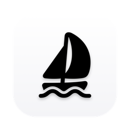
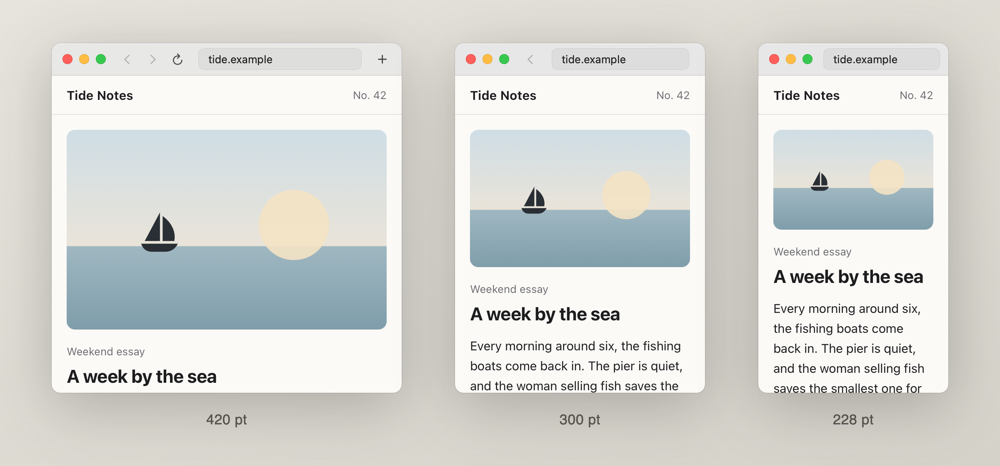

MiniBrowserA macOS browser that shrinks to a very small window, so a page can stay open in a corner of your screen.
InstallmacOS 13 or later, free

Usable at any width
The narrower the window, the fewer buttons it shows, down to just the address bar.

Its own sign-ins and data
Accounts and cookies in MiniBrowser belong to MiniBrowser alone and don't touch the browser you use every day.
Install
Requires macOS 13 or later. The menus are in Chinese; the toolbar is icons only.
With Homebrew
brew install --cask zhiyozhao/tap/minibrowserOpen it right away; you won't see the “can't verify the developer” message.
By hand
- Download the MiniBrowser DMG.
- Open the DMG and drag MiniBrowser into Applications.
- If macOS says it can't verify the developer the first time you open it, close the message, go to System Settings → Privacy & Security, and click “Open Anyway” near the bottom.